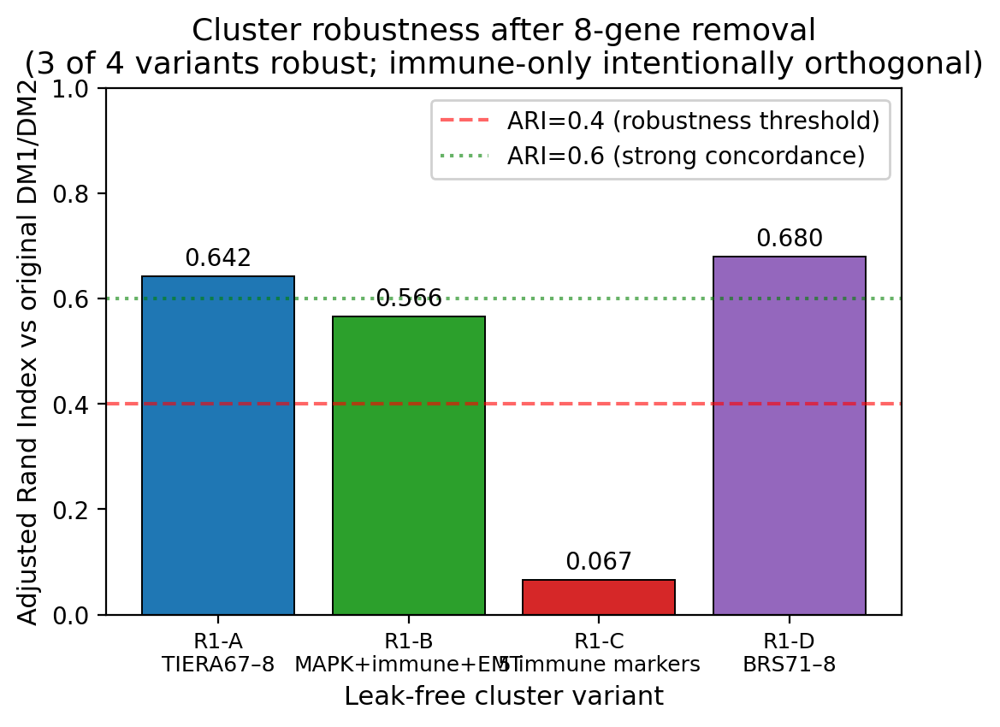

BBioinformatics OUP — DIAL framework methods
Methodology + reproducibility arm for DM1/DM2 axis recovery and leak detection.
5
cohorts in pipeline
Paper B focuses on DIAL, 5-cohort validation, and proper preranked GSEA. Clinical value is treated strictly as downstream application, not as the primary framing.
Target
Bioinformatics (OUP)
Main assets
`README.md` and `cover_letter.md` complete; figures/tables/reproducibility folders prepared
Reproducibility
random_state=42 · sklearn 1.8.0 · gseapy 1.13 · scanpy 1.12.1



PDF Status
Paper B는 README와 cover letter까지는 준비되어 있지만, repo 안에 정식 manuscript PDF는 아직 없습니다. 지금은 methods-facing overview와 source links를 유지합니다.